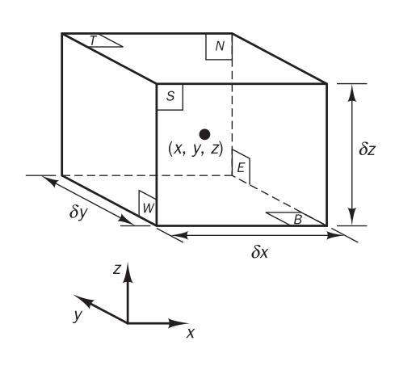
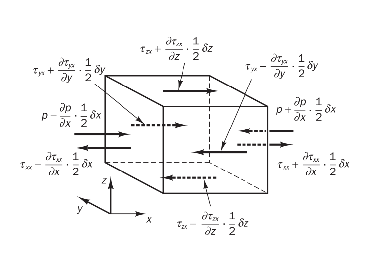
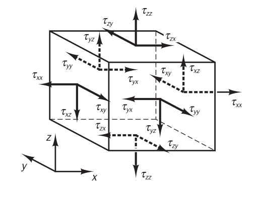

Taşınımsal Nakil (Convective Transport)
Bu kavramı anlamak için bir akışın önünde duran geçirgen bir yüzey düşünelim. Akışı temsil eden hız alanını biliyoruz, bu alanın yüzeydeki vektörleri bir sıvı parçacığının o noktadaki, o andaki hareketini gösteriyor.
Bir sıvı parçacığı yeri değiştirilebilecek belli oranda bir madde, öğe içerebilir, ve o parçacık yüzeyin bir tarafından diğer tarafına geçtiğinde parçacıkla beraber ögenin yeri de değişmiş olur. Dikkat nakletme direk bir geçiş ima eder, hızın normal bileşenine oranla bir geçiştir bu. Bu bağlamda hızın sadece normal (yüzeye dik) olan bileşenine bakarız, çünkü yüzeye teğet olan bileşen hiç bir geçiş oluşturmazdı, yüzeye paralel olan bir gidiştir bu. Tabii ki yüzeyin farklı noktalarında farklı hızlar, ve farklı öğe değerleri olabilir, bu sebeple taşınımsal naklinin matematiksel tarifi bu farklılıkları göz önüne almalıdır.
Şimdi taşınımsal nakil $\Gamma_C$ ile tanımlarsak, bu değişken bir zaman anında sıvının akışı sebebiyle bir öğenin yüzeyi geçme oranı olacaktır. Eğer $\epsilon$ birim kütledeki öğe miktarı ise, $\rho \epsilon$ birim hacimdeki o öğenin miktarı olur (çünkü $\rho$ yoğunluk, birim hacimdeki kütle). O zaman herhangi bir noktada bu ögenin hız alanı içinde yerel bir hız vektörü yönünde anlık taşınma oranı / hızı $\rho \epsilon u$ olur, $u = \bar{u}(\bar{x},t)$. Bu oranı yüzeyden geçise tercüme edersek, yüzeydeki $n$ normaline sahip $\mathrm{d} S$ yüzey alanından geçiş oranı
$$ \delta \Gamma_C = \rho \epsilon (u \cdot n) \mathrm{d} S $$
Daha önce belirttik yüzeyin her noktasında farklı nakil oranları olabilir, tüm geçirgen yüzey için $\Gamma_C$ hesabı için her yüzey ögesinden olan geçiş oranlarını bir yüzey entegrali ile toplarız,
$$ \Gamma_C = \int_S \rho \epsilon (u \cdot n) \mathrm{d} S $$
Bu tür entegrallere taşınımsal akış entegrali (convective flux integral) ya da kısaca taşınımsal entegral ismi veriliyor. Fakat dikkat bu hesabın sonucu bir oran (birim zamandaki öğe), akış değil (birim alandaki öğenin birim zamandaki hızı).
Kabaca öğe dedik, ama pek çok kavram üstteki formüller kapsamına giriyor, mesela kütle hesabı için $\epsilon = 1$ diyebiliriz, ya da momentum için $\epsilon = u$. Isı taşınımı da benzer şekilde temsil edilir.
Reynolds Nakletme Teorisi (Reynold's Tranport Theorem)
Daha önce pür kütle hesabında $\epsilon = 1$ üzerinden türetilen muhafaza kanununu görmüştük,
$$ \frac{\partial \rho}{\partial t} + \nabla \cdot (\rho u ) = 0 $$
Ya da
$$ \frac{\partial \rho}{\partial t} + \mathrm{div} (\rho u ) = 0 $$
Bu $\epsilon = 1$ durumudur, daha genel $\epsilon$ için
$$ \frac{\partial \rho \epsilon}{\partial t} + \mathrm{div} (\rho \epsilon u ) = 0 $$
elde edileceğini ispat etmek zor değil. Terim $\mathrm{div}$ içindekilere çarpım kuralını uygularsak, ve $\epsilon$ yerine $\phi$ kullanınca açılım
$$ \rho \frac{\partial \phi}{\partial t} + \phi \frac{\partial \rho}{\partial t} + \rho \mathrm{div} (\phi u ) + \phi \mathrm{div} (\rho u ) = 0 $$
$$ \rho \frac{\partial \phi}{\partial t} + \phi \mathrm{div} (\rho u ) + \phi \left( \frac{\partial \phi}{\partial t} + \mathrm{div} (\rho u ) \right) $$
[devam edecek]
Doğu-Batı yönü E,W ile Kuzey-Güney yönü N,S ile Yukarı-Aşağı yönü T,S ile belirtilecek.



Ornek olarak $x$ yonundeki kuvvetleri her uc yon icin hesaplayalim.
$E,W$ yüzleri üzerindeki $x$ kuvvetleri,
$$
\left[
\left( p - \frac{\partial p}{\partial x} \frac{1}{2} \delta x \right) -
\left( \tau_{xx} - \frac{\partial \tau_{xx}}{\partial x} \frac{1}{2} \delta x \right)
\right]
\delta y \delta z +
\left[
-\left( p + \frac{\partial p}{\partial x} \frac{1}{2} \delta x \right) +
\left( \tau_{xx} + \frac{\partial \tau_{xx}}{\partial x} \frac{1}{2} \delta x \right)
\delta y \delta z +
\right]
$$
$$ = \left( -\frac{\partial p}{\partial x} + \frac{\partial \tau_{xx}}{\partial x} \right) \delta x \delta y \delta z $$
$N,S$ yönündekiler,
$$
- \left( \tau_{yx} - \frac{\partial \tau_{yx}}{\partial y} \frac{1}{2} \delta y
\right) \delta x \delta z +
\left( \tau_{yx} - \frac{\partial \tau_{yx}}{\partial y} \frac{1}{2} \delta y
\right) \delta x \delta z
$$
$$ = \frac{\partial \tau_{yx}}{\partial y} \delta x \delta y \delta z $$
$T,B$ üzerindekiler,
$$ - \left( \tau_{zx} - \frac{\partial \tau_{zx}}{\partial z} \frac{1}{2} \delta z \right) \delta x \delta y + \left( \tau_{zx} + \frac{\partial \tau_{zx}}{\partial z} \frac{1}{2} \delta z \right) \delta x \delta y $$
$$ = \frac{\partial \tau_{zx}}{\partial z} \delta x \delta y \delta z $$
Birim hacimdeki üstteki yüzey streslerinin etkisi için üstteki üç sonucu toplayıp $\delta x \delta y \delta z $ ile böleriz, sonuç,
$$ \frac{\partial (-p + \tau_{xx})}{\delta x} + \frac{\partial \tau_{yx}}{\partial y} + \frac{\partial \tau_{zx}}{\partial z} $$
[devam edecek]
Kaynaklar
[1] Versteeg, An Introduction to CFD
[2] Katz, Introduction to Fluid Mechanics
[3] Mueller, Essentials of Computational Fluid Mechanics